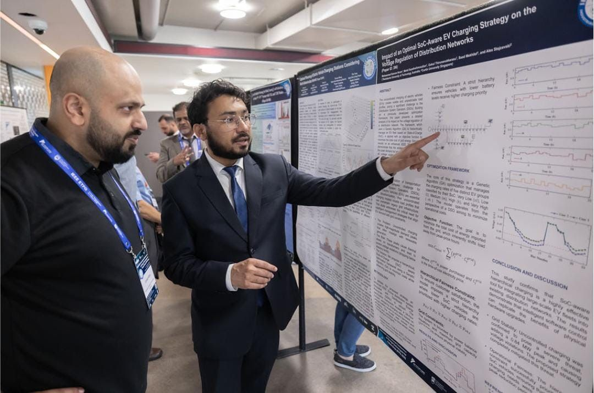

Publications
5 journal articles, 3 conference papers, 2 book chapters and 1 patent. Each title links to the full paper. For citation counts, see my Google Scholar profile.

Journal articles
- 2026Coordinated operation and stability limits of grid-forming and grid-following inverters in power system restoration M. K. Ikram, P. A. Hosseinabadi, M. Seyedmahmoudian, S. Mekhilef, A. Stojcevski. Energies 19(16), 3875.
- 2026A review of electric vehicle integration in peer-to-peer energy networks M. K. Ikram, M. Seyedmahmoudian, G. Thirunavukkarasu, S. Mekhilef, A. Stojcevski, J. Moreira. World Electric Vehicle Journal 17(8), 383.
- 2025A two-stage fuzzy-informed optimization framework for reduced peak load and hierarchical EV management in smart grids M. K. Ikram, M. Seyedmahmoudian, G. S. Thirunavukkarasu, S. Mekhilef, A. Stojcevski. Journal of Energy Storage 136, 118308.
- 2024Advanced real and reactive power measurement using analog multiplier and phase-controlled switching technique M. K. Ikram, M. S. J. Asghar, M. Seyedmahmoudian, S. Mekhilef, A. Stojcevski, A. Al-Assaf. Sensors and Actuators A: Physical 378, 115812.
- 2023Voltage independent reactive current based sensor for static VAr control applications M. K. Ikram, S. M. Amrr, M. S. J. Asghar, T. Islam, A. Iqbal. IEEE Sensors Journal.
Conference papers
- 2025Impact of an optimal SoC-aware EV charging strategy on the voltage regulation of distribution networks M. K. Ikram et al. IEEE International Conference on Energy Technologies for Future Grids (ETFG), Wollongong.
- 2025Modeling and analysis of EV charging station placement impacts on a hybrid microgrid M. K. Ikram et al. IEEE Australasian Universities Power Engineering Conference (AUPEC).
- 2021A novel method for the measurement of active and reactive power by sample-and-hold M. S. J. Asghar, M. K. Ikram, M. Sarfraz, T. Islam. IEEE ICCCA, pp. 424–428.
Book chapters
- 2024A cloud-based innovation for establishing environmental surveillance: the smart air quality monitoring system S. Khan, M. Sufian, M. K. Ikram, M. S. Khan. Springer SIGMAA 2023, vol. 1460.
- 2022An intelligent and effective cyber-secured smart-home automation system with embedded AI M. K. Ikram, K. M. K. Senan, M. Mustaqeem, M. Sarfraz. Springer ICCAI 2022, vol. 435, pp. 153–163.
Patent
- 2021Measurement of real and reactive power using controlled rectifiers M. K. Ikram. Published in the Official Journal of the Indian Patent Office, Issue 46/2021. Application No. 202111049900.